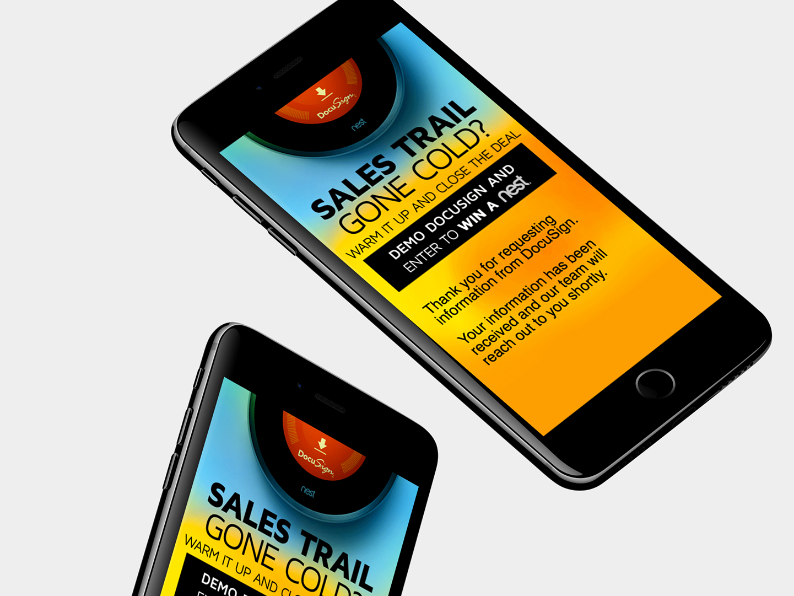
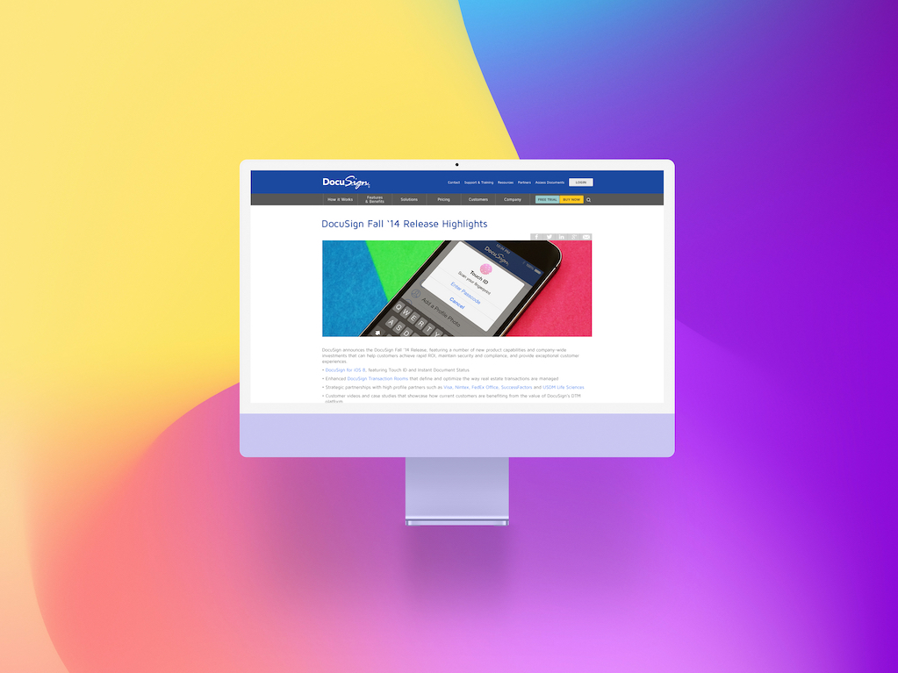

Creative direction for DocuSign's enterprise co-marketing with Salesforce, Google, Microsoft, and Apple — plus standalone brand campaigns spanning digital, print, and out-of-home.
At DocuSign I led creative for the company's most visible external partnerships — building co-branded campaign systems that had to simultaneously honor two enterprise brand identities while driving measurable adoption.
The work spanned major technology partnerships including Salesforce, Google, Microsoft, and Apple, alongside a parallel program of standalone DocuSign brand campaigns spanning digital, print, and out-of-home — including the "Just DocuSign It" and "Close Business Fast" lines.

